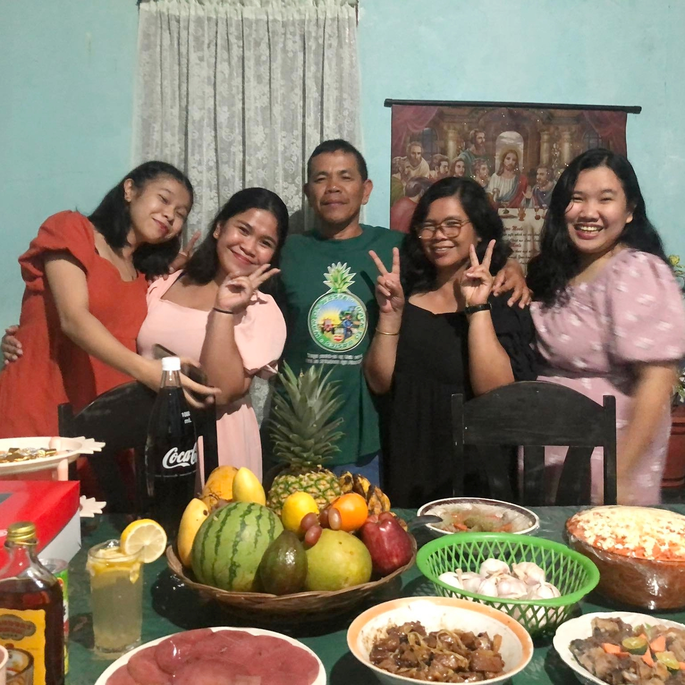
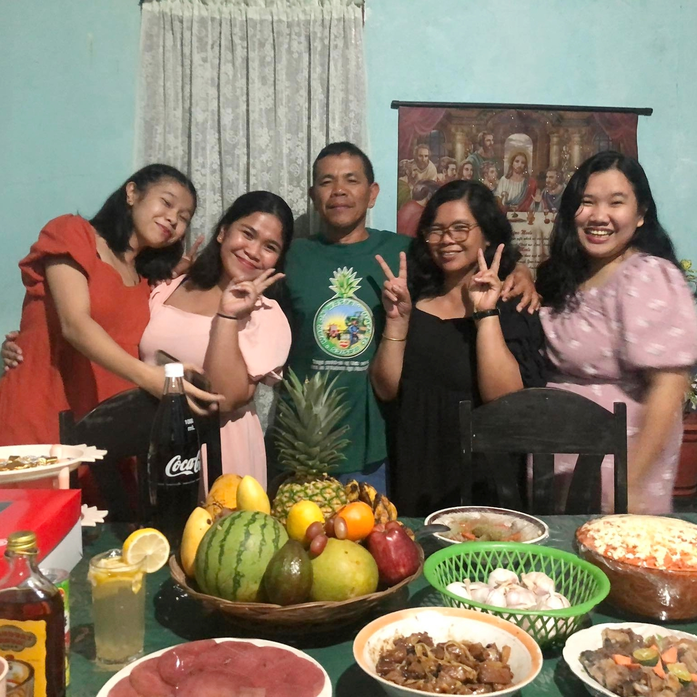

Self-Introduction:
- Name: Salingoran, Chinn Demple S.
- Age: 19
- Birthdate: November 10, 2004
- Hobbies: Listening to music, taking a nap & eating hotdog bun
Social Media Pages:
Me 8 years from now:
8 years from now, I see myself tasked with safeguarding sensitive information, protecting digital assets, and fortifying the defenses of organizations against cyber threats. I see myself gaining the skills that a security analyst have which includes the ability to decipher the cryptic languages of malicious actors. Much like deciphering a dream's symbolism, security analysts analyze patterns, anomalies, and vulnerabilities within a network to uncover potential threats. This skill requires a unique blend of technical expertise, critical thinking, and intuition, allowing analysts to interpret the digital landscape and identify potential risks before they materialize into cyber nightmares.
<ITIII Blog Entries
This page contains what I have learned in the subject Introduction to Computing.
Output/Learnings every lesson:
In the first lesson, "What is Computing”, I learned the use of computers to solve problems or complete tasks. It can be as simple as using a calculator to add two numbers, or as complex as developing a new algorithm for machine learning. In the simplest terms, computing is about using machines to process information. I gained knowledge of the different eras of technology. The second lesson helped me to have an idea of what professions and careers should I choose in the future. The third lesson taught me the differences between data and information, how the data is processed, and the four phases of data to cycle information, and the four components of a computer. Furthermore, I learned the basic concept of computer security and explored the famous cybercrime cases. Lastly, I learned how the html codes work and what are their functions and also, I enjoyed doing my website.
Highlight of my favorite lesson:
So far, I mostly liked the lesson in HTML & CSS since I have the capabilities to make my own website. Explore new codes and to making my day productive since I am learning everytime I'm making my website.
Here are the highlights of the HTML & CSS:
- The standard markup language for creating Web pages.
- HTML tags label pieces of content such as "heading", "paragraph", "table", and so on
- Browsers do not display the HTML tags, but use them to render the content of the page
- Simple design language that describes the style of an HTML document. Through CSS, each element in the HTML document can be modified according to its color, size, backgrounds, layout, etc. CSS saves a lot of work. It can control the layout of multiple web pages all at once. External stylesheets are stored in CSS files.
Flex Page
Flexing our photos might also change our perspective. It promotes a healthy and affirming relationship between our bodies and our identities. We support a narrative of self-acceptance when we choose and share photos that accentuate our positive traits and distinctive characteristics. This habit develops into a kind of self-love that penetrates our everyday lives and transcends the virtual world, changing the way we view ourselves and other people. Flexing our photos can boost our confidence, can motivate, and can make personal empowerment.
Here are some photos of me:
and some photos that I am proud of:
Being with people you love is the greatest source of happiness and contentment. A distinct sense of pride is influenced by the comforting relationships of
family, the understanding of those we care about, and the support of friends. This pride comes from the deep connections that make up the foundation of
our lives, not from our individual accomplishments.

 
